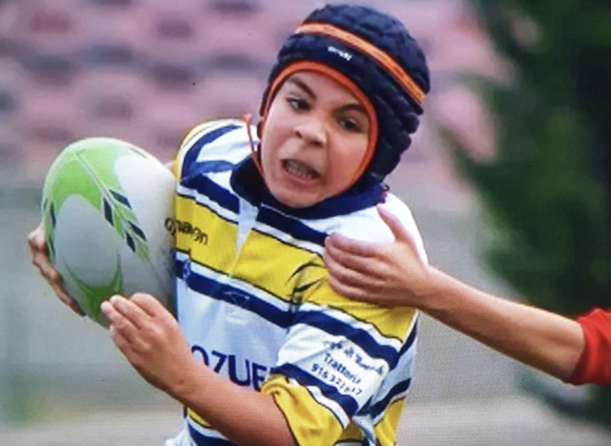
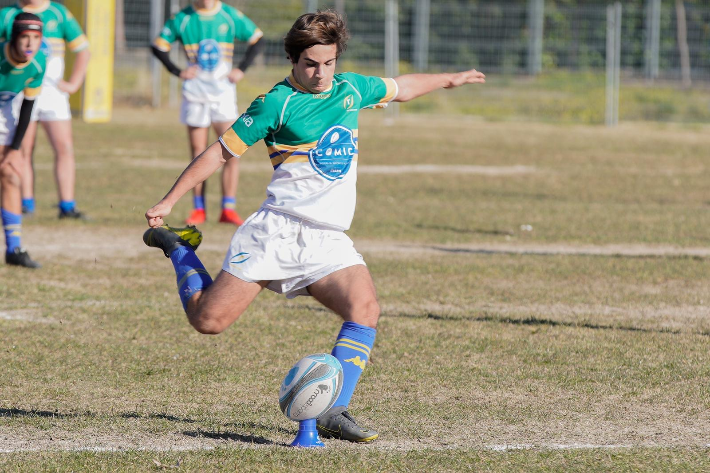
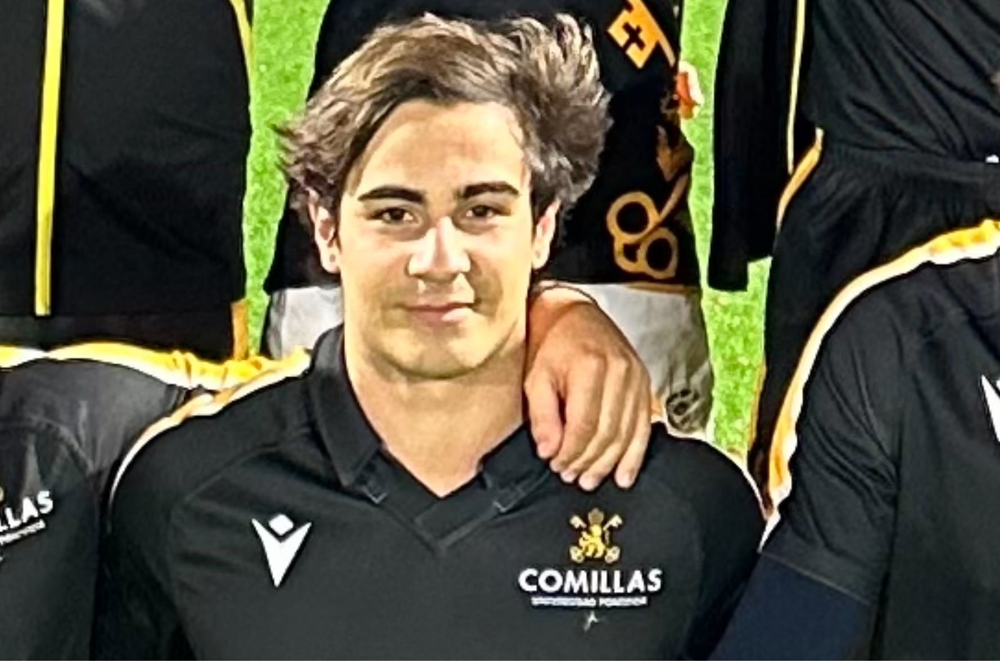
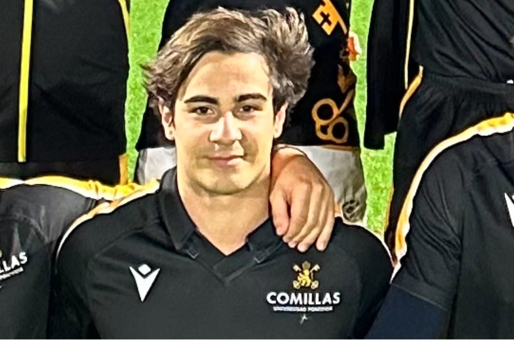
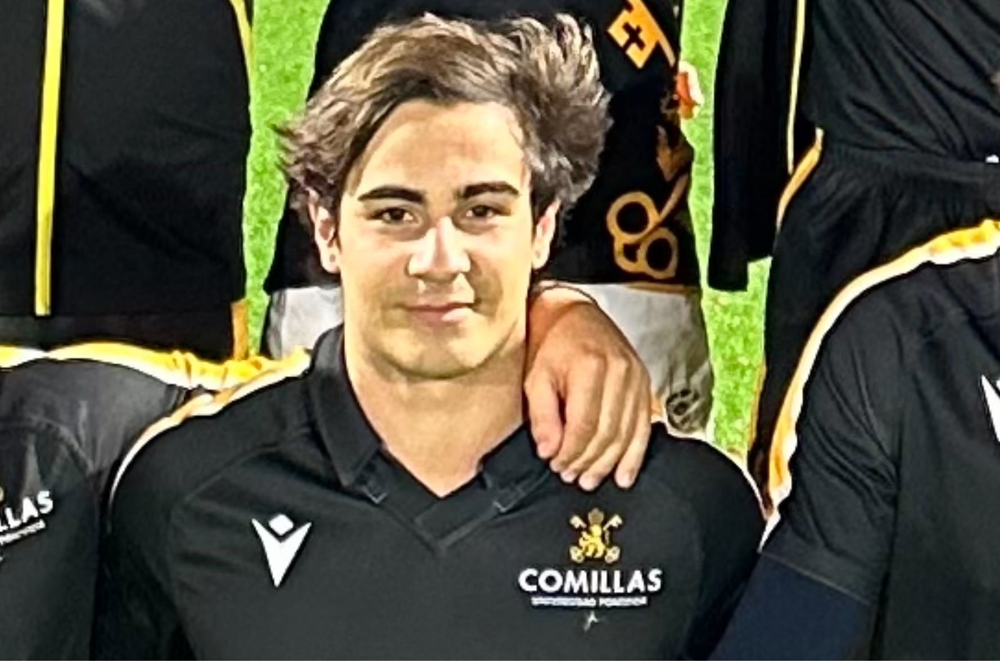
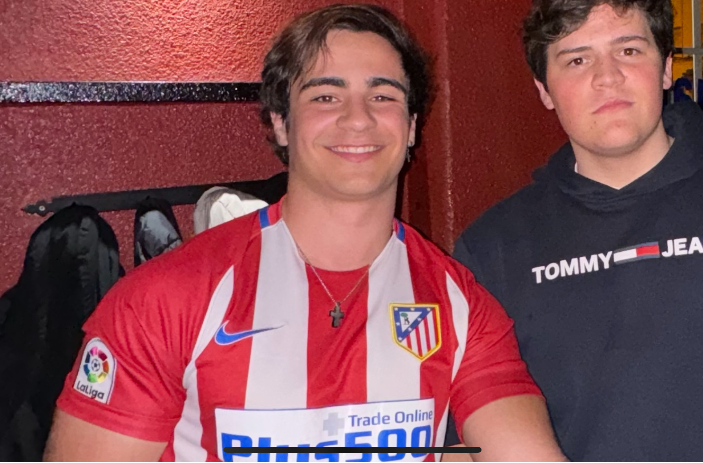
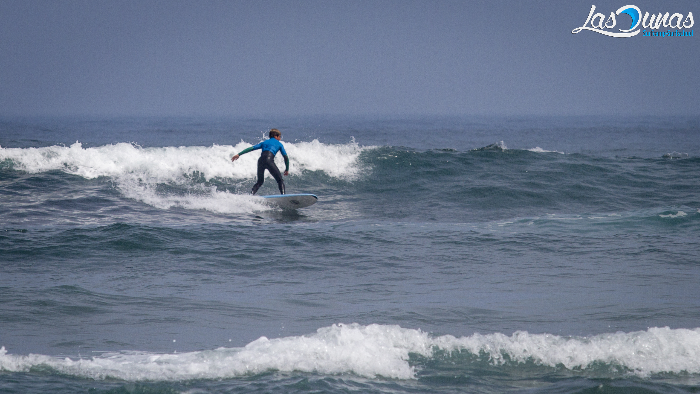
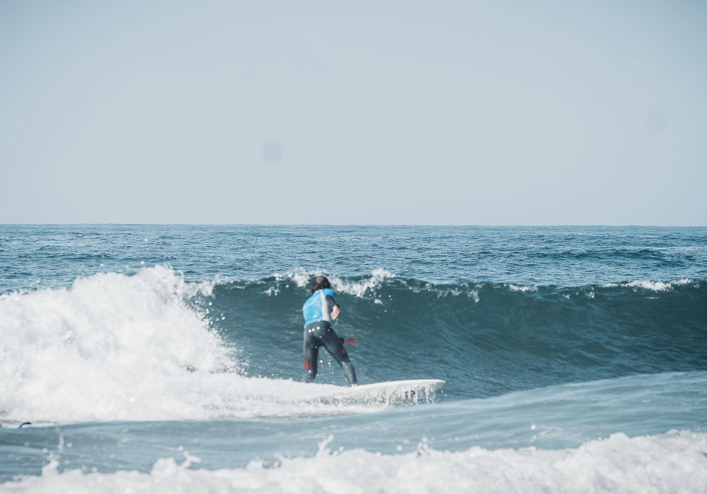

Mis Hobbies
Tengo ciertas pasiones e intereses. Estos son.
Rugby
Mi mayor pasión. Mi deporte de referencia desde los 3 años hasta ahora. He jugado en una multitud de equipos que pueden verse en la tabla de abajo.
| Equipo | Descripción | Años en los que jugué |
|---|---|---|
| CRC | Mi club de la infancia, adolescencia y vida adulta. | 2006-2024 |
| Selección Madrileña | Tuve la suerte de ser seleccionado para representar mi comunidad | 2016-2019 |
| Universidad Pontificia Comillas | Representando el equipo de la universidad | 2021-2024 |


 


Atlético de Madrid
Sufriendo cada fin de semana, pero no lo cambiaba por nada.

Surf
Mi escape preferido desde los 13 años. Siempre que puedo me voy a la costa.


Viajes
Muy común desde pequeño, ya que comparto este interés con mi familia.


Ajedrez
Soy muy principiante, pero estoy aprendiendo por mi cuenta a jugar al ajedrez. Este tipo de vídeos me ayudan a mejorar.